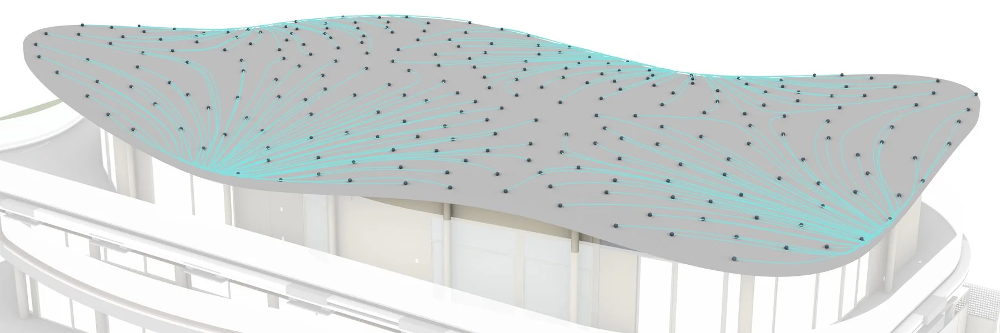
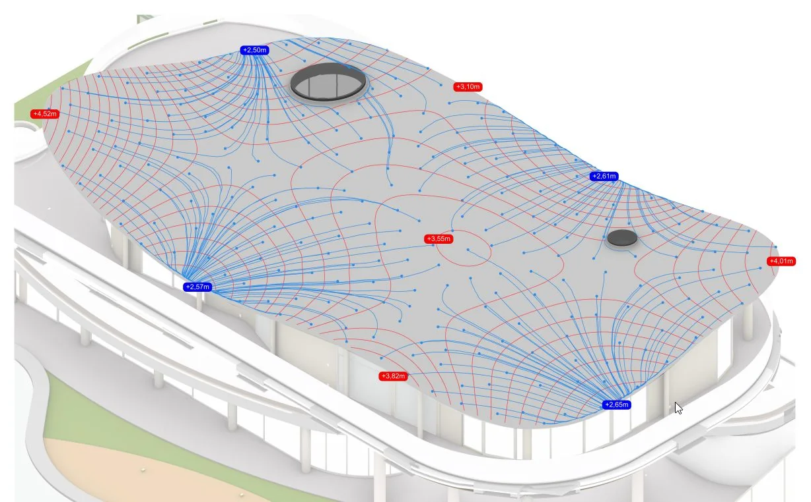
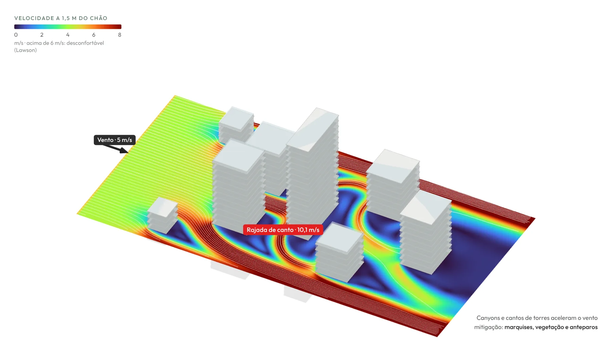
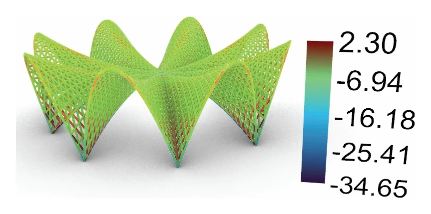
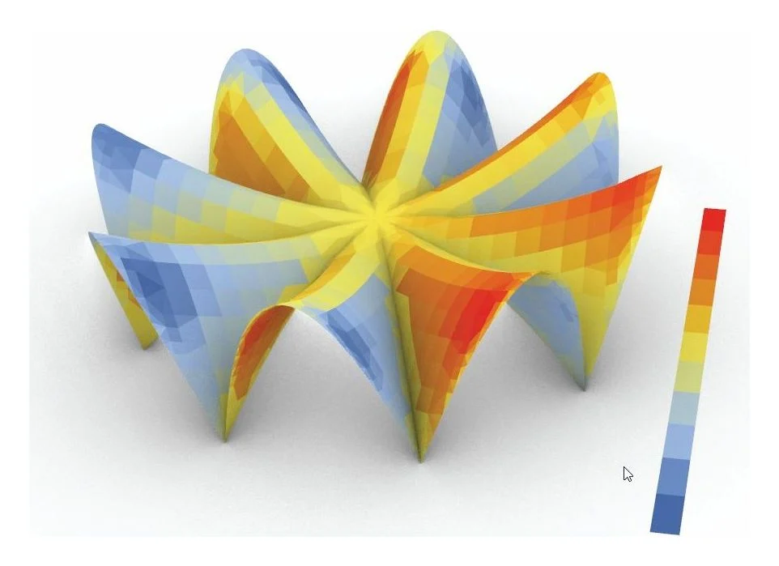

Simulation and optimization
Every decision measured before construction.
We simulate sun, daylight, energy, wind, water, sound and people flow on your design model and test thousands of variations to find the one that delivers more with less.
Six lines of work.
Each area can be hired on its own or combined with the others.
Solar radiation and PV
Panel layout and count, BIPV façades and estimated annual yield.
Daylight and glare
Openings, skylights and shading sized by performance (sDA, ASE, UDI, DGP).
Thermal and energy
Thermal performance and energy use for codes and certification.
Wind and CFD
Natural ventilation, wind loads and pedestrian comfort.
Water and drainage
Run-off on roofs, drain placement and rainwater tank sizing.
People, sound and optimization
Acoustics, visibility and egress, with single- and multi-objective optimization.
Examples.
Images produced by BRD. Those marked BRD project come from real projects; those marked Unicamp research come from the team's academic work; the others use illustrative models.










Want to apply this to your project?
Send us what you have, even if it's just an idea or a study file. We'll reply with a scope proposal.